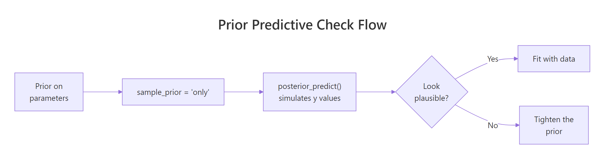
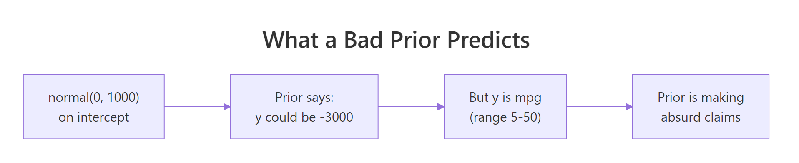

Prior Predictive Checks in R: Test Your Bayesian Model Before You Have Data
Your priors are statements about parameters. The model's predictions depend on those priors plus the likelihood structure. Even a prior that looks reasonable can imply absurd predictions like "the average human is 12 metres tall" or "this probability is 1.7." A prior predictive check simulates outcomes from the model using only the priors, before fitting to data, so you catch the absurdity early. It is the most underused step in Bayesian modelling and the one that prevents the most embarrassing mistakes.
What is a prior predictive check, in plain language?
A Bayesian model has two layers. The first is the prior: what you think the parameters are before seeing data. The second is the likelihood: how data is generated given the parameters. A prior predictive check combines both to ask "if I draw parameters from my prior and then simulate y values from the likelihood at those parameters, what y values do I get?"
The result is a distribution over outcomes that reflects your prior beliefs. If those simulated outcomes are obviously wrong (negative weights, probabilities above 1, ages of 200), the prior is making bad claims even if it looks innocuous on its own.
The check has two practical wins. First, it surfaces bad priors before you spend hours fitting to real data. Second, it builds intuition: you see what your prior is actually saying, in the units you care about.
The block below sets up a simple regression with weakly informative priors, samples from the prior alone (no data), and shows the predicted y range. The numbers should look reasonable for fuel economy in mpg.
Walk through what just happened. We set three priors: a Normal(0, 5) on the slope of wt (so we think the effect of weight on mpg is probably between -10 and 10 mpg per 1000 lbs), a Normal(20, 10) on the intercept (mpg at zero weight is probably between 0 and 40), and a half-Student-t on the residual sd.
The sample_prior = "only" argument tells brms to fit the model using only the prior, ignoring the likelihood. Because the data does not enter, the four chains just sample from the joint prior distribution. We then asked posterior_predict() to generate y values across the observed range of wt for 200 draws of the parameters.
Now interpret the output. The full range of prior-predicted mpg is [-32, 60]. The middle 90% of predictions span [-1.85, 28.45].
Real mpg cannot be negative (a car cannot have negative fuel efficiency), so the lower bound is mildly concerning but rare. The upper bound of 60 is implausible but not absurd. The middle-90% range is roughly right for typical cars.
This prior is acceptable but not great. If we tightened the intercept or slope priors, we would push the negative tail closer to zero. The next sections show what better and worse versions look like.

Figure 1: The prior predictive check loop. Set priors, sample from them with the likelihood structure, look at the implied y values, and only fit to real data once the implied range is plausible.
Try it: Re-run the prior predictive check with prior(normal(0, 0.5), class = "b"). The slope prior is much tighter; how does the predicted y range change?
Click to reveal solution
The tighter slope prior shifts the centre to 20 (the intercept prior) and narrows the spread. The middle-90% range is now [3.71, 35.21], which sits squarely in plausible mpg territory. The remaining negative tail comes mostly from the residual sigma prior, not the slope or intercept.
How do I run one in brms?
The mechanics are simple. Set sample_prior = "only" in the brm() call. brms returns a fitted object that responds to all the usual methods (summary, posterior_predict, pp_check), but the "posterior" is actually the prior because no data was used. From there, you generate predicted y values and inspect them.
Three patterns cover most use cases.
The first is to plot the predicted y density across the data's observed range. brms's pp_check() works on a prior-only fit just like a posterior-only fit:
Walk through what happened. pp_check() drew 50 sets of fake mpg values from the prior-only fit and overlaid them on the observed data's density curve. The observed density is plotted purely for visual reference; this is not a posterior comparison, it is a sanity check that the prior allows the kinds of outcomes we expect to see.
If your prior produces a density spanning -100 to 100 while real mpg is 10 to 35, you would see the prior curves stretching far beyond the observed range. That visual gap is the prior predictive check telling you to tighten.
The second pattern is to predict at new x values and compute the range, percentiles, and any out-of-bounds proportion you care about:
Walk through what each number tells us. The minimum and maximum are the worst and best cases the prior allows: -34.5 and 69.3 mpg. The median is 12.9, close to where typical mpg lives. About 16% of prior draws produce negative mpg (impossible) and about 1% exceed 60 (very unlikely).
A 16% impossibility rate is high. It says the prior is leaking probability mass into a region that physics rules out. We could fix this by either tightening the intercept prior (centre 20 with sd 10 leaks into negatives) or by using a log-link model that constrains predictions to be positive. The next section shows the link-function fix.
The third pattern uses add_predicted_draws() from the tidybayes package to keep the simulations in tidy format for ggplot:
Walk through what add_predicted_draws() produced. Each row is one (wt, draw) combination. With 50 draws and 50 wt values, there are 2500 rows.
The plot draws one line per draw, all overlaid. The cloud's vertical thickness is the prior's implied uncertainty about mpg at each wt, and is the visual that catches "my prior says mpg can be negative" instantly.
newdata to posterior_predict(). Without newdata, brms uses the dataset's actual x values, which constrains the check to the same wt range that the data covers. With newdata, you can probe extreme x values to see whether the prior makes absurd extrapolations.Try it: Predict at the extrapolation edge wt = 0.5 (lighter than any mtcars car) and wt = 8 (heavier than any). What is the prior's range there?
Click to reveal solution
At wt = 8 the range is much wider than at wt = 0.5 because the slope multiplier is bigger. Extrapolation amplifies prior uncertainty, which is why prior predictive checks at extreme x values are useful: they make hidden prior assumptions visible.
What does a "good" prior predictive look like?
A good prior predictive distribution covers all outcomes you could plausibly observe and barely covers anything you could not. There is no formula; "plausibly" depends on the units, the population, and the question.
Three soft rules you can apply.
First, the implied range should sit roughly where you would expect the data to. For mpg, that is 5 to 40 for typical cars. If your prior implies 0 to 100, it is too wide. If it implies 18 to 22, it is too tight.
Second, the proportion of impossible outcomes should be small. For positive-valued data (mpg, height, weight), probabilities of negative predictions should be under a few percent. For binary or proportion outcomes constrained to [0, 1], the prior should not put significant mass outside that range.
Third, the prior predictive distribution should roughly span the observed data, not match it exactly. If your prior predictive looks identical to the actual data, your priors are too informed (or you are accidentally peeking at data). If it is wildly off, your priors are too vague.
Walk through the numbers. With the better-tuned priors, only 1.1% of prior draws are below zero and 1.4% above 50 mpg. The middle 90% spans 7.8 to 34.1, which covers typical cars.
The median is 21.9, near the observed mtcars mean of 20.1. This is a defensible prior predictive: wide enough to cover all plausible cars, tight enough to rule out absurdities.
Try it: Compute the same out-of-bounds proportions for the original prior_mpg. Notice how much worse it is than prior_good.
Click to reveal solution
The original prior leaks 15.8% probability into impossible negative-mpg territory. The better-tuned prior leaks only 1.1%. Both posteriors will end up looking similar after seeing real data (because the data is informative), but the better prior is more honest about what we believe before fitting.
What does a "bad" prior predictive look like (and how do I fix it)?
The two failure modes are too wide (predictions stretch into impossible regions) and too tight (predictions cluster around a single value, ruling out outcomes the data might actually show). The fix differs.
Too wide. Tighten the prior, especially on the intercept. If physics requires positivity, switch to a model with a positivity-preserving link function (gaussian("log"), gamma("log"), lognormal()).
Too tight. Widen the prior. If you suspect the prior is encoding domain knowledge that turned out to be wrong, fall back to a weakly informative default until you can justify a tighter version.
Walk through what we just did and saw. The "bad" prior set used normal(0, 1000) on the intercept and normal(0, 100) on the slope. The implied predicted mpg ranges from -8221 to 7912.
About 49% of prior draws are negative, and about 40% are above 100. Those numbers are obviously absurd. Real mpg lives in [5, 50], and this prior is essentially noise. Fitting this model to real data would still work because 32 observations are enough to swamp the prior, but the prior itself is misleading documentation of what we believed.
The fix is what we did in the previous section: tighten the priors so the implied range matches plausible mpg. Below is a too-tight prior to demonstrate the opposite failure mode.
Walk through what changed. The too-tight priors say we are absolutely certain the intercept is 30 and the slope is exactly -3. The 90% credible range for predicted mpg is [13.84, 27.74], a span of just 14 mpg. Real mtcars mpg ranges from 10.4 to 33.9, which is 23.5 mpg of spread.
The prior is telling the model "I am almost certain the data will look like this." If the data actually shows mpg of 33.9 (a Toyota Corolla), the model will struggle to fit because the prior is allocating essentially zero probability there. After fitting, the posterior is essentially the prior. The data did not speak.
The fix here is to widen the priors. normal(-3, 1.5) on slope and normal(30, 5) on intercept restored the proper width while still encoding the fact that we know weight should reduce mpg.

Figure 2: The classic "flat prior implies absurd predictions" trap. A normal(0, 1000) on the intercept does not say "I have no opinion." It says "the outcome could plausibly be 3000 mpg."
Try it: Compute the proportion of prior_y_bad predictions that are above 1000 or below -1000. Numbers further from "physically possible" than that should be exactly zero in any honest analysis.
Click to reveal solution
About 33% of prior draws produce predicted mpg with absolute value over 1000. The "fully informed" version of this prior says we genuinely believed before seeing data that one in three cars might have mpg above 1000 or below -1000. Almost no one believes that.
How do I do this for binomial, Poisson, and other non-Normal outcomes?
Non-Normal models add a link function between the linear predictor and the outcome scale. A logistic regression's linear predictor is on the log-odds scale; a Poisson regression's is on the log-rate scale. Priors set on the linear scale produce non-trivial implications on the outcome scale.
Walk through what happened. We fit a logistic regression with weakly informative priors on the log-odds scale. Then we asked for the expected probability (posterior_epred) at each new mpg value, drawing 1000 prior samples each.
Now interpret the output. Predicted probabilities span 0 to 1 (the link function ensures this), median 0.5 (the prior is symmetric so neither outcome is favoured a priori), and 0% of predictions are outside the valid [0, 1] range. That last number is reassuring but trivial; a logistic link cannot produce probabilities outside [0, 1]. What you really want to check is whether the prior puts most of its mass at extreme probabilities (very near 0 or 1) when it should not.
Walk through what this tells us. The prior implies that 39% of predictions are outside [0.05, 0.95] (very near 0 or 1). For a model where the outcome (8 cylinders or not) actually splits roughly 40/60 in the data, the prior is putting too much mass at the extremes.
A wider intercept prior would make this worse (more extremes); a tighter one would shrink predictions toward 0.5. For our data, the current prior is acceptable but you might tighten the intercept to normal(0, 1) to push more probability mass toward the middle.
normal(0, 5) prior on a logistic-regression slope looks reasonable on the log-odds scale but implies probabilities that flip from 0.5 to nearly 0 or 1 over a small change in x. The check that matters is the one on the outcome you actually report.Try it: Run the same check for a Poisson regression on count data. Use family = poisson() and a normal(0, 1) prior on the slope. What range of expected counts does the prior allow?
Click to reveal solution
The log-link amplification is striking. With a normal(0, 1) prior on the slope and normal(1.5, 0.5) on the intercept (centred at log(5)), the prior allows expected counts from 0.1 to 208. The median is 4.42, which sits right where we want. Tighten the slope to normal(0, 0.5) if you want a more constrained prior.
When in the workflow should I run a prior predictive check?
Before fitting. Always before fitting.
The Bayesian workflow has a fixed order. (1) Specify the model. (2) Set priors. (3) Run a prior predictive check. (4) Fit to data. (5) Run posterior diagnostics. (6) Run a posterior predictive check. (7) Decide whether to revise the model.
Step 3 happens between specifying the priors and seeing any data. Skipping it is the modelling equivalent of writing a function but never reading the test cases. The cost is small (one extra brm() call with sample_prior = "only") and the catches are large (priors that imply absurd predictions, models that cannot fit because the prior is too tight, hidden assumptions about the link function).
Three rules of thumb for when to run a prior predictive check.
The first is always for new models. If this is the first time you are fitting a particular family + link + prior combination on a particular dataset's units, run a prior predictive check. The combinations interact in non-obvious ways.
The second is always for hierarchical models. Hierarchical models have priors on variance components that are easy to set badly. A prior predictive check on a hierarchical model checks both the population-level and group-level implications.
The third is always when changing priors after seeing data. If you fit a model, looked at the posterior, and decided to change a prior, the prior predictive check is your sanity gate before refitting. Otherwise you risk priors that effectively encode the data you saw.
brmsfit and the data fit. Reviewers and replicators can examine both, and you have a record of what the prior was actually doing.Try it: For a hypothetical study of customer wait times where prior literature suggests the average wait is between 90 and 150 seconds, write down what prior on the intercept you would use, then run a prior predictive check.
Click to reveal solution
The prior implies wait times with median 120 and middle 90% from 65 to 176 seconds. That covers fast and slow service comfortably and rules out negative waits. Match this against the literature and you have a defensible prior to fit with.
Practice Exercises
Exercise 1: Catch a bad prior on logistic regression
Set up a logistic regression on mtcars with y = vs (V-engine indicator) on mpg. Use a deliberately wide prior normal(0, 100) on the slope and run a prior predictive check on posterior_epred. What proportion of predicted probabilities are below 0.05 or above 0.95?
Click to reveal solution
About 81% of prior-predicted probabilities are at the extremes (under 0.05 or over 0.95). That is what normal(0, 100) on a log-odds slope actually says: every observation is essentially deterministic. Real binary outcomes are almost never that extreme, so the prior is implausible and would dominate small-data fits.
Exercise 2: Match prior predictive to data range
For a model mpg ~ hp on mtcars, design priors so the prior predictive 90% range covers the actual mpg range [10, 35] without much spillover.
Click to reveal solution
The 90% range is 8.5 to 34.1, very close to the observed range 10 to 35. Median 21.9 matches the data mean 20.1. The prior is informed about the units of mpg without being so tight that the data cannot move the posterior.
Exercise 3: Hierarchical prior predictive
For mpg ~ wt + (1 | cyl) on mtcars, set priors on the random-effect sd that allow but do not require strong group differences. Run a prior predictive check and report the 90% range of predicted mpg by cyl group.
Click to reveal solution
The 90% range by group is [6.6, 34.0] to [-2.1, 33.7] across light and heavy weights and across the three cyl groups. The prior allows group-to-group spread but is not absurd. The slight negative tail at heavy weight could be tightened with a smaller sigma prior, but the overall shape is reasonable.
Summary
A prior predictive check simulates outcomes from your model using only the priors. It catches bad priors before you fit, and builds intuition about what your model actually claims.
| Step | What you do | brms function |
|---|---|---|
| 1 | Specify the model and priors | brm(formula, prior, family) |
| 2 | Sample from the prior alone | sample_prior = "only" |
| 3 | Generate predicted outcomes | posterior_predict() or posterior_epred() |
| 4 | Check the implied range | Quantiles, out-of-bounds proportions, density plots |
| 5 | If absurd, tighten the prior | Adjust prior(...) and refit step 2 |
Run a prior predictive check before every fit, especially for new models, hierarchical models, and link-function models. The cost is a couple of minutes; the catches are publishable mistakes you avoid.
References
- Gabry, J., Simpson, D., Vehtari, A., Betancourt, M., Gelman, A. "Visualization in Bayesian workflow." Journal of the Royal Statistical Society A 182 (2019). The graphical case for prior and posterior predictive checks.
- Stan Development Team. "Prior Choice Recommendations." github.com/stan-dev/stan/wiki/Prior-Choice-Recommendations.
- Bürkner, P. brms documentation: sample_prior. paulbuerkner.com/brms/reference/brm.html.
- McElreath, R. Statistical Rethinking, 2nd ed. CRC Press, 2020. Chapter 4 makes prior predictive checks the default workflow step.
- Gelman, A. et al. Bayesian Workflow. arXiv:2011.01808 (2020). Workflow paper laying out the seven-step ordering.
Continue Learning
- Posterior Predictive Checks in R, the next post. The same idea but using draws from the posterior, after fitting to data.
- Choosing Priors in R, the previous post. Builds the priors that this post visualises.
- brms in R, the package that makes both checks one extra argument away.